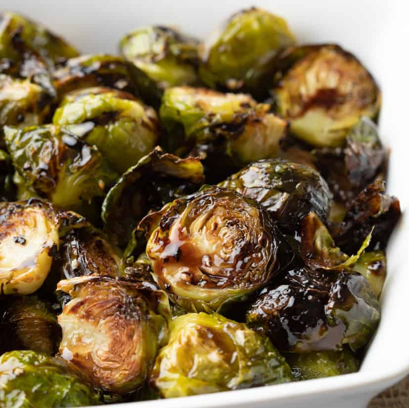
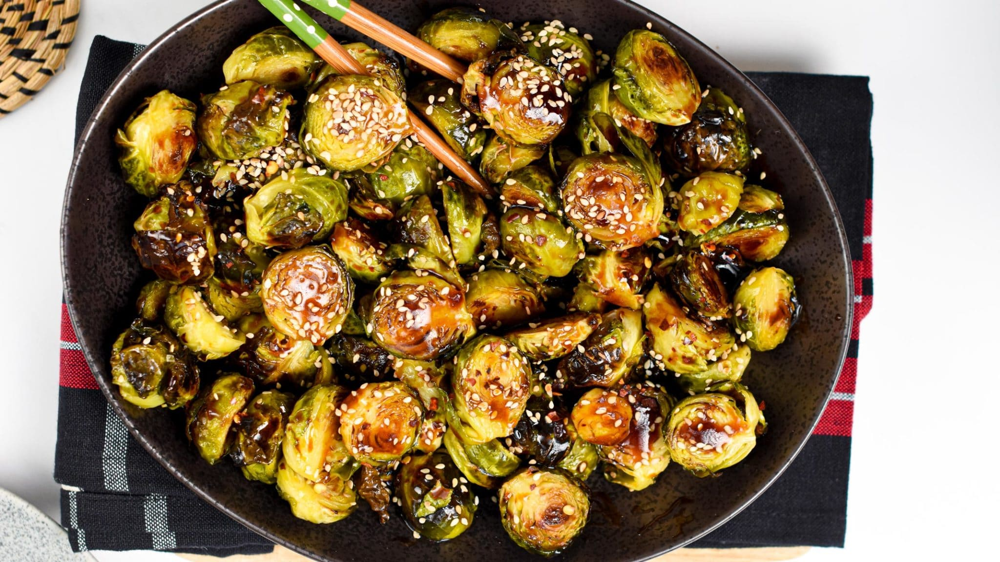

Asian Brussel Sprouts
This is a Carine Claudepierre recipe!

Ingredients
- Brussel Sprouts - The most important part of the dish!
- 1 tablespoon - Sesame oil
- 1 teaspoon - Rice Vinegar
- 1 tablespoon - Soy Sauce
- 1 teaspoon - Fish Sauce
- 1/4 cup - Water
- 3 crushed Garlic Cloves
- 1/4 teaspoon - Ground Ginger
- Desired amount - Black Pepper
- 2 teaspoons - Cornstarch
- 3-4 teaspoon - Brown Sugar
- 2 tablespoons - olive oil
- 1 pinch - chili flakes
- 2 tablespoons - Sesame seeds
Growing up I was not a fan of vegetables at all. My house was a mash potatoes and corn enviroment. I have expanded my pallet as I've gotten older and discovered a love for brussel sprouts.
The asian flavors pair great with the brussel sprouts and I make these as a side quite often.
Your cooking guide
- Preheat oven to 400°F. Line a baking sheet with parchment paper. Slightly oil the paper and set it aside.
- Trim brussel sprouts in halves and set in a large mixing bowl and pour oil on top. Stir to evenly cover all halves.
- Place the brussel sprouts in your baking sheet and make sure they do not touch each other.
- Bake for 15 minutes. Stir halfway and keep roasting for 10-15 minutes until crispy outside and tender inside.
Asian Sauce
- In a non-stick saucepan, combine all the ingredients we've yet to use but use minimal sugar. Whisk to combine and dissolve cornstarch into the mix.
- Bring over medium-high high, until it simmers and thickens. Stir once in a while. Taste test and add sugar if a more sweeter sauce is desired.
- Remove roasted brussel sprouts from the oven and place them into a serving dish. Pour the warm sticky sauce on top and mix.
- Serve with a pinch of chili flakes and sesame seeds on top.

sweetashoney.co is a great website that offers a wide variety of recipes. Feel free to check it out for yourself!